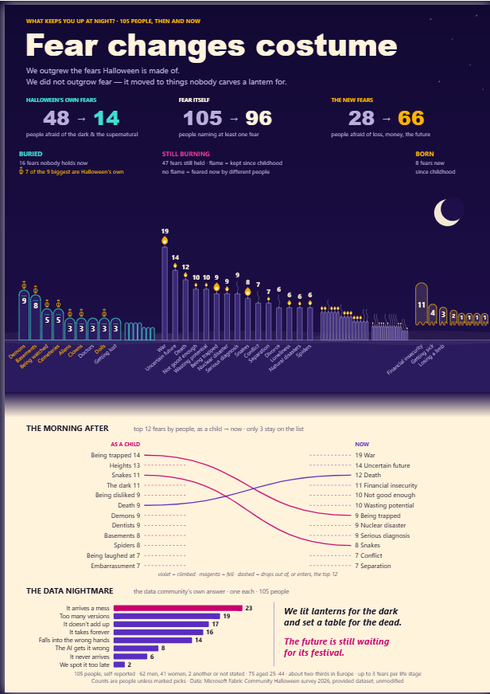
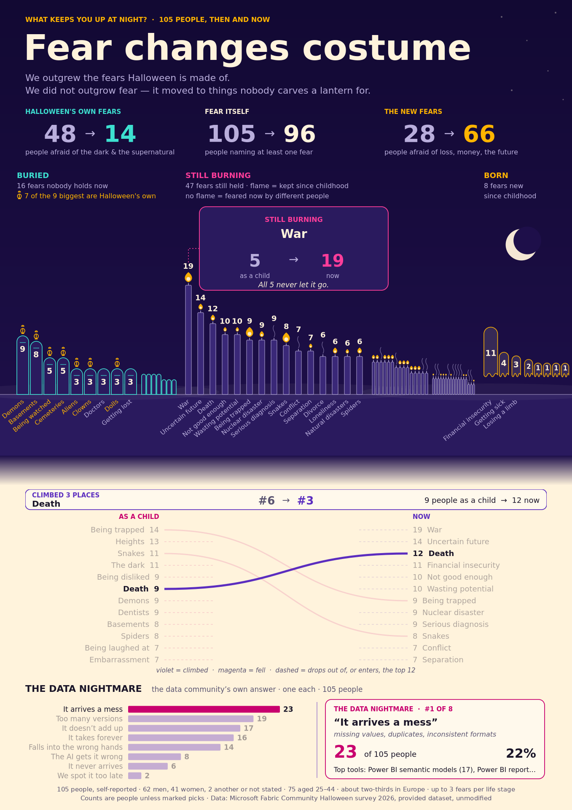

Fear changes costume: a one-page Deneb poster in Power BI
How a Halloween survey of 105 people became one portrait page with four Deneb visuals: the claim, the design rules, the four specs, the offline layout check, and every trap on the way. Eight steps, about a day, if you already know Power BI. No Vega experience assumed.
What the page says
The Microsoft Fabric Community's Halloween 2026 contest asked people: what keeps you up at night? Each person named up to three fears from childhood and up to three from now. The page answers with one claim:
48 people were afraid of the dark and the supernatural as children; 14 are now. 105 named a fear as a child; 96 still do. 28 feared loss, money or the future as children; 66 do now.
See it live: the published report · the contest entry.
What you are building
| Part | What it is |
|---|---|
| Page | One portrait page, 1357 × 1920, Fit to width, night above and daylight below |
| Visuals | Five: four Deneb (title band, graveyard, slope chart, bar chart) and one footer text box |
| Model | The contest's starter model, plus three columns on DimFear, two small tables and the measures in folder P28 |
| Interaction | A hover card per mark inside each spec. No slicers, no pages to navigate |
| Checks | An offline canvas layout check, a DAX read-back of every number, and a look in Desktop |
Get the code
Everything the steps name is in one public repository, MIT licensed. Get it before step 1.
git clone https://github.com/BIVenture2025/halloween-fear-pbi-deneb.git cd halloween-fear-pbi-deneb
| Folder | What is in it |
|---|---|
pbip/ | The Power BI Project as submitted. Open the .pbip file |
build/ | The scripts that wrote the model additions, the measures and the four Deneb specs |
harness/ | The offline canvas layout check, and the exact scripts that checked this page |
docs/ | This guide, the data contract, and the closure pack (post-mortem, plan against actual, cost) |
build/p28c_deneb.py is all four
specs, harness/deneb_layout_check.mjs is the check that kept the labels apart, and
docs/data_contract.md is where every number on the page was computed first.The build
Open the project and let it fetch the data
A Power BI Project (.pbip) is a Power BI report saved as a folder
of plain-text files instead of one binary .pbix. The report layout is PBIR (JSON, one
file per visual) and the data model is TMDL (text, one file per table). Because they are text,
a script can write them, and you can compare two versions line by line.
- Install Power BI Desktop (free, Windows). Recent versions open
.pbipfiles directly. On an older version, switch on the Power BI Project features under Options → Preview features first. - Open
pbip/Halloween Contest 2026 - Starter File.pbip. - Click Refresh. The model reads the contest's survey file from the contest's own public URL.
survey_responses.csv from the contest page and point the raw_survey_responses expression (in expressions.tmdl, or Transform data in Desktop) at your copy.Read the data before you design anything
The survey has 105 rows, one per person. Each person gave up to three fears as a child and up to three fears now, stored as JSON lists inside one column each. That one fact decides the counting rule for the whole page.
- Count people, not picks. 285 fears were picked for childhood and 264 for now, but a person who picked three dark fears is one person afraid of the dark, not three. Every number on the page is a count of distinct people.
- The starter model already splits the lists into a fact table with one row per person per fear per
life stage (
FactFearSelection), plus a fear dimension with a category per fear (DimFear, 74 fears in 9 categories).
docs/data_contract.md was written before any mockup. Every number the page shows was computed there by a Python replay of the model's own logic, and later checked again with DAX. One sentence in the first brainstorm said everyone's childhood country was their current country. The profile showed that 24 of 105 had moved. A story built on that sentence would have been wrong.Find the one claim the page has to prove
A poster makes one point. This one makes it in three numbers, each a before-and-after count of people:
| Group | Fear categories | As a child | Now |
|---|---|---|---|
| Halloween's own fears | Dark, Unknown & Supernatural | 48 | 14 |
| Fear itself | any fear at all | 105 | 96 |
| The new fears | Separation & Loss, Performance & Future | 28 | 66 |
So the headline is "We outgrew the fears Halloween is made of. We did not outgrow
fear." The grouping is stored in the model as one column, DimFear[Beat]
(1 = outgrow, 2 = keep, 3 = grow into, 0 = other answers), so the page and the numbers cannot
drift apart.
Add to the model as text, not by clicking
The model additions are written straight into the TMDL files by two scripts. Each script refuses to run twice on the same folder.
build/p28_model.pyaddsBeat,BeatNameandFearShorttoDimFear(as Power Query steps), plus two small tables:DataNightmareandFabricTool.build/p28_measures.pyadds the measures in display folderP28. For example, People Naming A Fear Childhood is the people count filtered to beats 1–3.
python3 build/p28_model.py "<model>.SemanticModel/definition" python3 build/p28_measures.py "<model>.SemanticModel/definition"
TMDL needs Windows line endings (CRLF)
Power BI Desktop expects \r\n in .tmdl files. A file saved with \n only can make the model fail to load with an error that names a comma, not the line ending. Both scripts write CRLF on purpose. If you edit a .tmdl in an editor, check its line-ending setting.
Restart Desktop after a model change. Reload is not enough
Desktop's reload re-reads the report layout but not the model. After you change a .tmdl file, close Desktop and reopen the .pbip. Then check one value you changed before you trust anything on screen.
Fix the type size at page scale before you draw
The page is a portrait poster, 1357 × 1920. On a laptop, Desktop shows it at about half size, so text sized for the full canvas looks tiny on screen.
- Choose the page view first: Format page → Canvas settings → Page view → Fit to width. The poster then reads larger, and you scroll down through it.
- Set a floor: no text below 15 px at page scale. In
p28c_deneb.pyevery text mark goes through one helper that asserts it, so a spec with a 14 px label fails when it is built, not when someone squints at it.
Write the four Deneb specs
Each visual on the page is one Deneb visual whose Vega spec is generated by
build/p28c_deneb.py. The specs set no background, so the page's night-to-daylight image shows
through.
| Visual | Function | What it shows |
|---|---|---|
| Title band | title_band() | The headline and the three before→after numbers |
| Graveyard | graveyard() | 16 headstones (fears nobody holds now), 47 candles (fears still held; a flame means someone kept it since childhood), 8 new graves |
| The morning after | flip() | Top 12 as a child against top 12 now. Only 3 stay; Death climbs from #6 to #3 |
| The data nightmare | nightmare() | The survey's one data question, ranked: It arrives a mess leads with 23 of 105 |

A hover card's labels showed on the idle page
In this report Deneb drew with Vega's canvas renderer, its default (no render mode is set). On canvas, a group's opacity is not applied to the marks inside the group. On SVG it is. A hover card faded out by setting its group to opacity 0 therefore vanished in every SVG test and showed its labels on the page in Desktop.
Fix: give every child of the hover group its own opacity driven by the same signal. Every hover card in p28c_deneb.py does.
Motion has to end
The opening animation runs on one Vega timer for 4.5 s, then the clock stops. An earlier version had a gently looping ambient effect, and that fails WCAG 2.2.2 (anything that moves for more than five seconds needs a way to pause it). A poster cannot offer a pause button, so the motion ends instead.
For the technical reader: how the timer stops
The clock signal is min(now() - t0, 4600), updated by a timer event throttled to 40 ms. Every animated property is a function of clock, so once the minimum is reached nothing changes, and Vega stops redrawing.
Prove the layout offline, on canvas
Before any spec goes near Desktop, harness/deneb_layout_check.mjs renders it
on canvas, the same way Deneb does, and measures every visible piece of text: is it at least 15 px, is
it inside its visual, does it keep 3 px from other text and 2 px from shapes. It also renders each kind
of hover state.
cd harness mkdir -p ~/vega/v6 && (cd ~/vega/v6 && npm i vega@6.4.0 canvas@3.1.0) FONTCONFIG_FILE=$PWD/deneb_fonts.conf VEGA_NM=~/vega/v6/node_modules \ node deneb_layout_check.mjs cfg.json

A checker that reads nothing reports a pass
The first version of the harness walked the scene graph one level off, read 0 text items, and reported 0 issues. It now throws if it reads none. A second bug: registering fonts with node-canvas while an italic variant was also registered silently dropped the bold face, so bold text measured as regular, about 10 % too narrow. A fontconfig alias fixed it.
"Not overlapping" is not the same as readable
Two labels reading 10 10 passed a zero-tolerance overlap test while touching. The real rule is a clearance: 3 px between texts, 2 px from shapes.
Place it, read every number back, and look
build/p28c_report.py writes the page and its five visuals into the report
folder. It refuses to overwrite anything, so run it on a copy of the starter project. Then:
- Read the numbers back from the running model, not from the picture. Connect to the open model with DAX (DAX Studio, or the Power BI modeling MCP server) and check 105→96, 48→14, 28→66, 16 / 47 / 8, and the nightmare counts 23 · 19 · 17 · 16 · 14 · 8 · 6 · 2.
- Look at the page in Desktop. Some problems exist only there.
- File → Save As → .pbix, reopen once, check the page view is still Fit to width, and publish or upload without saving again.
The visual header icons covered the numbers
Desktop draws a small header (focus mode, the … menu) over the top-right of every visual on hover. On a poster, it sat on top of the 66 and the word BORN. No offline render can show it, because the header belongs to Power BI, not to the spec. Fix: turn the visual header off on every visual (visualHeader.show = false).
Desktop rewrites your files when you save
After you save in Desktop, the files on disk are Desktop's, not your generator's. On this project a save bumped Deneb's version metadata, pruned an unused theme, added synonyms to the culture file, and switched the page view from Fit to width to Fit to page. Re-run a generator on a copy and compare the two. Never regenerate in place over a file a person has saved.
Every trap, in one table
| Trap | What happens |
|---|---|
| Hover-card labels visible on the idle page | Canvas does not apply group opacity to children. Give every child its own opacity. |
| "Text too small", three times | Specs sized at canvas pixels and shown at about 0.47×. Set a 15 px floor at page scale before drawing. |
| Visual header icons over the numbers | Host chrome, invisible offline. Turn the header off on a poster page. |
| Looping motion | Fails WCAG 2.2.2. Run once and stop (4.5 s here). |
| A layout check that read 0 items reported 0 issues | Make the checker throw when it reads nothing. |
| Bold measured as regular | node-canvas registerFont with an italic variant dropped the bold face. Use a fontconfig alias. |
| Touching labels passed an overlap test | Use clearances (3 px text, 2 px shape), not zero-tolerance overlap. |
| Reload did not pick up a model change | Restart Desktop after a .tmdl edit, then check a value. |
| A native table scrolled on a poster | Fixed-row poster blocks are easier in Deneb than in a table visual. |
| Desktop's save rewrote generated files | Regenerate into a copy and compare. Never in place. |
What this page does not claim
These are the limits a careful reader would find, stated up front.
- 105 people are not a population. They are members of the Fabric data community who answered a Halloween survey. The footer states the base: 62 men, 41 women, 2 another gender or not stated, and about two-thirds in Europe.
- Childhood fears are remembered, not measured. Each answer is an adult recalling being a child.
- The three groups are an editorial choice. The page states them, and the data contract has all nine categories.
- "8 fears born" leaves out 3 answers (None of these, Prefer not to answer, Something else) that the survey files under Other Responses.
- The hover states were checked on canvas offline, not photographed in Desktop. They use the same construction as an earlier version whose hover states were seen in Desktop.
- The layout check stands DejaVu Sans in for Segoe UI. DejaVu is about 10 % wider, so the check errs on the cautious side, but it is not the real face.